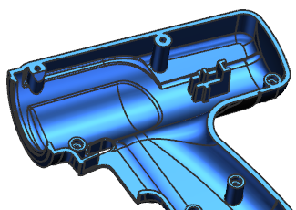
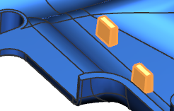
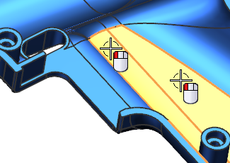
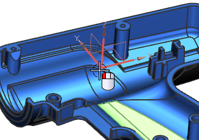
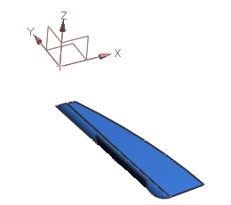

Create a Part Module
-
Open des18_85_intra_part_module.

-
Make sure that the Tools→Update→Interpart Update→Delay Geometry, Expressions, and PMI Update option is not selected.
-
In the Part Navigator, right-click Part Module “Heat Sink” and choose Expand All.
The part module contains three collectors: Inputs, Work, and Outputs. A sketch and two extrude features are in the Work collector. All three features make up this one part module.

You need to create another part module with two ribs in the trigger area of this drill housing.

-
Choose Format→Part Module→Create.
-
In the Create Part Module dialog box, in the Name group, in the Part Module Name box, type Trigger Ribs.
-
Select the two faces as shown.

-
In the Input References group, click Start New Input Object .
-
Select the Datum Coordinate System as shown.

-
In the Settings group, set the following:
-
Activate Part Module =

-
Show Only Part Module after Activation =
Click OK.
A Part Module feature is created, with the objects you selected as the Inputs. The rest of the part is hidden and the Part Module is active.

-